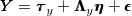
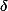
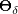
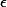
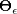
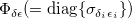
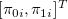
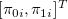

| 縦断データの分析 |
| 縦断データの分析 |
 、
、 測定モデルの両方で個々人の変化をモデリングする
測定モデルの両方で個々人の変化をモデリングする内生的構成概念も、それを予測する外生的構成概念も個人内で変化している場合、
測定モデルは
 |
|||
|  |
と表すとして、 の共分散行列  と  の共分散行列  に加え、 と の共分散行列  を指定する必要がある。
メモ
この共分散行列は、外生的構成概念における測定モデルの誤差と内生的構成概念における測定モデルの誤差間の相関関係を表したもの。仮にすべてゼロとおいたとしても、分析自体は行えるはず。
メモここまで
今、外生的構成変数と内生的構成概念が1つずつあるモデルを考える。 外生的構成変数の切片と傾きを ![$[\pi ’_{0i}, \pi ’_{1i}]^ T$](images/img-0153.png) 、内生的構成概念の切片と傾きを  とおく。
、内生的構成概念の切片と傾きを  とおく。
すると、切片から切片、切片から傾き、傾きから切片、傾きから傾き、へのパス係数を に含んだモデル
![\begin{equation*} \begin{array}{ccccccccccc}\begin{bmatrix} \pi _{0i}
\\ \pi _{1i}
\end{bmatrix}& =& \begin{bmatrix} \mu _{\pi _{0i}}
\\ \mu _{\pi _{1i}}
\end{bmatrix}& +& \begin{bmatrix} \gamma _{\pi _0 \pi '_0}
& \gamma _{\pi _0 \pi '_1}
\\ \gamma _{\pi _1 \pi '_0}
& \gamma _{\pi _1 \pi '_1}
\end{bmatrix}& \begin{bmatrix} \pi ’_{0i}
\\ \pi ’_{1i}
\end{bmatrix}& +& \begin{bmatrix} 0
& 0
\\ 0
& 0
\end{bmatrix}& \begin{bmatrix} \pi _{0i}
\\ \pi _{1i}
\end{bmatrix}& +& \begin{bmatrix} \zeta _{0i}
\\ \zeta _{1i}
\end{bmatrix} \label{eq.0827} \\ \bm@general \boldmath \m@ne \mv@bold \bm@command {\eta } & = & \bm@general \boldmath \m@ne \mv@bold \bm@command {\alpha } & + & \bm@general \boldmath \m@ne \mv@bold \bm@command {\Gamma } & \bm@general \boldmath \m@ne \mv@bold \bm@command {\xi } & + & \bm@general \boldmath \m@ne \mv@bold \bm@command {B} & \bm@general \boldmath \m@ne \mv@bold \bm@command {\eta } & + & \bm@general \boldmath \m@ne \mv@bold \bm@command {\zeta } \\ \end{array}\end{equation*}](images/img-0156.png) |
を考えれば良い。
| 縦断データの分析 |